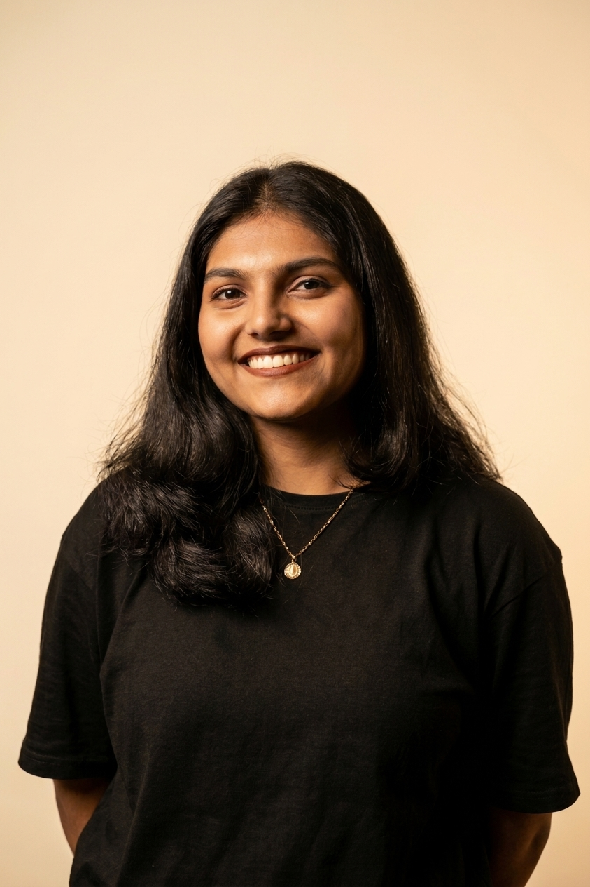

HELLO, I'M
Passionate about building efficient software systems and creating meaningful digital experiences. I enjoy solving real-world problems through technology while balancing my creative side through art and design.

Driven and analytical Computer Science student with a strong foundation in software engineering, backend development, system architecture, and workflow automation. I enjoy transforming complex real-world challenges into clean, scalable software solutions.
My interests extend beyond programming into design, photography, and storytelling through visual content. I believe technology and creativity work best together to create impactful experiences.
St. Joseph's College of Engineering and Technology, Palai
University: APJ Abdul Kalam Technological University (KTU)
Expected Graduation: 2027
IEEE Student Branch SJCET Palai
IEEE Student Branch SJCET Palai
IEEE Student Branch SJCET Palai
IEEE Student Branch SJCET Palai
Led the curation team for TEDx at SJCET Palai.
Curated speakers and event experiences for TEDx.
Volunteered for ASTHRA (National Level Tech Fest), FACEOFF (National Level Dance Competition), and various IEEE and college events.
SACK IT centralizes incoming IT support emails into an intelligent automated workflow. Using AI-powered semantic search, ticket classification, prioritization, and automated responses, it reduces manual intervention while ensuring unresolved issues are routed to the appropriate technicians.
Student Developer and Co-author of the BTech Computer Science Mini Project. Contributed to backend development, AI workflow integration, database design, and overall software implementation.